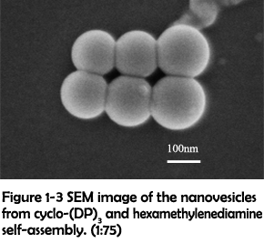
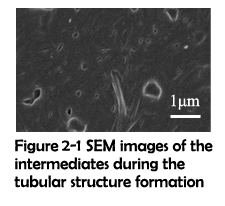
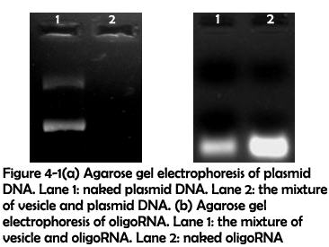

Synthesis and Characterization of the Assemblies
In this work, the assemblies were synthesized in the following two manners: (1) direct condensation of carboxyl group and amino group and (2) electrostatic interaction between carboxyl group and guanidyl group. After assembling, the morphologies of the assemblies were characterized by scanning electron microscopy (SEM). SEM images of the assemblies revealed that different combinations of peptide rings and linkers could assemble to form different morphologies. By covalently crosslinking cyclo-(DG)3 with ethylenediamine, vesicles with a diameter about 200 nm were successfully obtained (Figure 1-1 (a)). However, when cyclo-(DP)3 was crosslinked with ethylenediamine, nanosheets were fabricated instead of vesicles (Figure 1-1 (b) and (c)).

As described above, it could be inferred that the replacement of glycine to proline is an important factor accounting for the morphological changes of the assemblies. Compared to glycine, proline possess a much higher steric hindrance which is clearly presented in the Ramachandran diagrams (Figure 1-2)1.
As a consequence, assemblies containing cyclo-(DP)3 are more robust in structure and therefore less susceptible to surface energy. Previous research has shown that high bending energy could contribute to the generation of large-sized assemblies and even intermediates without bending2-3. Thus, the occurrence of nanosheets was probably caused by the incorporation of much rigidity to the assemblies.
To identify whether the morphological transition was driven by the increasing rigidity, a longer linker hexamethylenediamine was used to crosslink with cyclo-(DP)3 to modulate the rigidity of assemblies. After assembling, many well-defined vesicles could be clearly observed (Figure 1-3). The size and zeta potential were further characterized by dynamic light scattering (DLS), which revealed that most of vesicles were in the range of 100-300 nm and in the positive-charged state under physiological conditions (Figure 1-4). Their positive charges might be generated from the presence of excess protonated amino groups in the defected areas, and thus they were favorable for achieving the loading of nucleic acids and further cell internalization4.
The morphologies of the assemblies constructed with different combinations of rings and linkers were summarized in Table 1. These results showed that covalent crosslinking of rigid rings and short linkers would lead to the formation of nanosheets, while rigid rings with long linkers or soft rings with short linkers would be favorable for the formation of vesicles. Additionally, soft rings and long linkers would assemble to form amorphous aggregates. With the decreasing of rigidity, the morphology varied from sheet to vesicle, and finally became amorphous aggregates, which demonstrated that the assemblies�morphology was highly dependent on the rigidity of formed nanostructure. The rigidity of the assemblies constructed in this fashion could be easily tuned by changing the amino acid components of peptide rings or adjusting the linker’s length. This method might also be useful for the construction of biomolecule-based membrane and even monolayer biomolecule-based nanosheets.
Table 1 Morphologies from different combinations of rings and linkers
| Rings and linkers | Morphology |
| Rigid rings + short linkers | Sheet |
| Rigid rings + long linkers | Vesicle |
| Soft rings + short linkers | Vesicle |
| Soft rings + long linkers | Amorphous aggregation |
The morphology of the assemblies constructed through electrostatic interaction was then characterized by SEM. SEM images of the assemblies revealed that a large amount of dispersed micrometer-scale vesicles was fabricated with cyclo-(DP)3 and fifteen-fold amount of cyclo-RR (Figure 1-5 (a) and (b)). When the amount of cyclo-RR was improved to seventy-five-fold amount of cyclo-(DP)3, nanotubes could be observed instead of vesicles (Figure 1-5 (c)). The nanotubes were further characterized by Transmission electron microscopy (TEM), and the TEM image clearly showed the hollow structure of nanotubes (Figure 1-5 (d)).
Fusing Mechanism: a Possible Mechanism for the Generation of Large Vesicles and Tubes
Several significant differences can be concluded from the SEM studies between the assemblies synthesized with cyclo-(DP)3 and 1, 6-diaminohexane (Assemblies 1) and the assemblies constructed with cyclo-(DP)3 and cyclo-RR (Assemblies 2). First of all, while assemblies 1 maintained their spherical morphology with the increasing ratio of carboxyl group to amino group, assemblies 2 are responsive to the ratio of carboxyl group to guanidyl group, switching their morphology between vesicles and tubes. Secondly, the sizes of the vesicles from assemblies 1 mostly range from 100 nm to 300 nm, but the sizes of the vesicles from assemblies 2 are all over 1 μm. Thirdly, while the vesicles from assemblies 1 have a strong tendency for aggregation, vesicles constructed through electrostatic interaction are mostly dispersed.
As demonstrated in previous work, assemblies fabricated through hydrophobic effect5 and Ï€-Ï€ stacking6 can undergo a fusing process to form larger assemblies. And due to the flexibility of secondary interactions, it is possible that the vesicles constructed through electrostatic interaction can also fuse together. To further investigate the mechanism for these significant differences, SEM was used to capture the intermediates before the finish of assembling. The fusing process of two electrostatic vesicles was shown in Figure 2-1. Clearly, two vesicles were approaching to each other, lengthened and gradually fusing to become a whole. Around them, a short tubular structure has already formed. This has inspired us to propose the fusing mechanism which could possibly explain the above-mentioned differences. As previously demonstrated2, the rings and linkers first assemble to form some tiny patches. With the size increasing, these patches will subject to the high surface energy and gradually bend to reduce the total energy. These bended patches further react with each other and monomers, finally forming a hollow sphere. Since the surface tension of a vesicle decreases with its diameter increasing, these vesicles have a strong potential for fusing. Due to the electrostatic interaction’s flexibility, the monomers of assemblies can readily reorganize themselves and finally fuse together. Different from electrostatic interaction, covalent bonds are solid and hard to break. As a result, although covalent vesicles aggregate closely with one another, the fusing process cannot actually happen.
Preorganization and Size Controllable Synthesis of Nanovesicles
On the basis of above studies, compared to covalent crosslinking, the strategy of using electrostatic interaction could facilitate the formation of better-shaped vesicles with a much higher yield. However, electrostatic vesicles were not stable in water, which substantially limit their biomedical applications. Note that amino groups can also be protonated to be positive, the electrostatic interactions between amino groups and carboxyl groups can be used to preorganize the monomers into vesicles, and the vesicles can be further solidified by suddenly adding the catalysts to the reaction system. Since electrostatic vesicles can fuse to form larger vesicles, it is rational to expect that the size of preorganized vesicles will increase with the elongation of time, and the size controllable synthesis could be achieved by adjusting the reaction time.
To test the feasibility of this novel assembling method and further verify our proposed fusing mechanism, the cyclic peptides and linkers were mixed in the same condition to preorganize with no catalyst added. The size of the assemblies was monitored by DLS at different time as shown in Figure 3-1 and Figure 3-2. The size distribution result clearly shows that the size of the assemblies constructed and preorganized with electrostatic interaction increases with the elongation of time, which is consistent with our proposed fusing mechanism.
In the subsequent stage, the catalysts can be added to the preorganized assemblies, converting electrostatic interaction to covalent bond. In this way, stable vesicles of a certain size distribution can be fabricated.
Applications in Nucleic Acid Delivery
As shown in figure 1-3 (a) and (b), the vesicles are mostly in the range of 100 nm to 300nm and positively charged after dialysis against water. Since particles in this range exhibit a significantly improved cellular uptake efficiency7 and their positive charge can be used to load nucleic acids, they are excellent candidates for nucleic acid delivery.
To test their ability to adhere nucleic acids, condensed assemblies 1 were mixed with plasmid DNA for 24 hours and oligoRNA for 9 hours. After this, agarose gel electrophoresis was used to detect whether plasmid DNA and oligoRNA could be adhered to the vesicles. As shown in figure 4-1(a), fluorescence completely disappeared when plasmid DNA were mixed with the vesicles, which implied that plasmid DNA have been attached to the vesicles. Figure 4-1(b) showed that after being mixed with assemblies 1, the fluorescence intensity decreased, which implied that oligoRNA could also be attached to the vesicles.
To test their performance for intracellular delivery, FAM-tagged oligoRNA was attached to the vesicles in the same condition and the complex was added to human cervical carcinoma, followed by 6 hours�cell culture. Fluorescence microscope image revealed that only in the presence of the vesicles could oligoRNA enter the cells (Figure 4-2). These results indicated that the FAM-tagged oligoRNA has successfully been attached to the vesicles and been taken into the cells.
Conclusion
In this work, we have presented a novel strategy to construct nanoscale assemblies with cyclic peptide. The morphology of the assemblies varies under different conditions. While nanovesicles and nanosheets have been fabricated through amidation reaction by modulating the assemblies�rigidity, nanovesicles and nanotubes can be constructed through electrostatic interaction with different ratios of linkers to rings. An easy approach has been proposed for size-controllable synthesis of nanovesicles based on the fusing mechanism, which was further proved by DLS studies. The vesicles synthesized using amidation reaction were found capable of adhering nucleic acid. Their potential application in nucleic acid delivery was revealed by fluorescence microscope image that FAM-tagged oligoRNA was successfully delivered to the cells.
On the basis of these results, we hope our boldly proposed methods can contribute to the diversity of nucleic acid delivery and give some inspiration to the field of controllable nano-synthesis. Theoretical calculation has revealed that pH-responsive delivery of nucleic acid can be achieved by incorporating histidine to the cyclic peptide. And due to their built-in structural flexibility, more complicated functions can be realized by carefully designing the cyclic peptides�structure. In the future, assemblies constructed using this strategy may also be useful in the fields of separation, catalysis and energy, which are far beyond the usage in nucleic acid delivery.
REFERENCES
1.  Lovell, S. C.; Davis, I. W.; Adrendall, W. B.; de Bakker, P. I. W.; Word, J. M.; Prisant, M. G.; Richardson, J. S.; Richardson, D. C., Structure validation by C alpha geometry: phi,psi and C beta deviation. Proteins-Structure Function and Genetics 2003, 50 (3), 437-450.
2.  Kim, D.; Kim, E.; Lee, J.; Hong, S.; Sung, W.; Lim, N.; Park, C. G.; Kim, K., Direct Synthesis of Polymer Nanocapsules: Self-Assembly of Polymer Hollow Spheres through Irreversible Covalent Bond Formation. Journal of the American Chemical Society 2010, 132 (28), 9908-9919.
3.   Baek, K.; Yun, G.; Kim, Y.; Kim, D.; Hota, R.; Hwang, I.; Xu, D.; Ko, Y. H.; Gu, G. H.; Suh, J. H.; Park, C. G.; Sung, B. J.; Kim, K., Free-Standing, Single-Monomer-Thick Two-Dimensional Polymers through Covalent Self-Assembly in Solution. Journal of the American Chemical Society 2013, 135 (17), 6523-6528.
4.   Varkouhi, A. K.; Scholte, M.; Storm, G.; Haisma, H. J., Endosomal escape pathways for delivery of biologicals. Journal of Controlled Release 2011, 151 (3), 220-228.
5.   Vauthey, S.; Santoso, S.; Gong, H. Y.; Watson, N.; Zhang, S. G., Molecular self-assembly of surfactant-like peptides to form nanotubes and nanovesicles. Proceedings of the National Academy of Sciences of the United States of America 2002, 99 (8), 5355-5360.
6.   Yan, X. H.; He, Q.; Wang, K. W.; Duan, L.; Cui, Y.; Li, J. B., Transition of cationic dipeptide nanotubes into vesicles and oligonucleotide delivery. Angewandte Chemie-International Edition 2007, 46 (14), 2431-2434.
7.   Panyam, J.; Labhasetwar, V., Biodegradable nanoparticles for drug and gene delivery to cells and tissue. Advanced Drug Delivery Reviews 2003, 55 (3), 329-347.